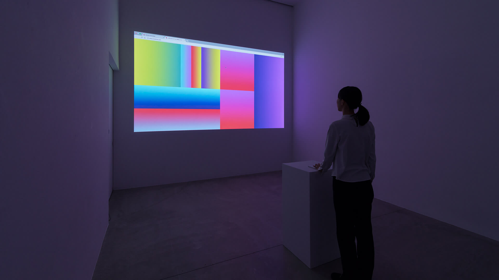

"Rafael Rozendaal is a Dutch internet artist who creates work using a computer screen as his canvas.
He also creates installations and sculptures that involve human interaction that is inspired by design and programming."
“I make websites-as-artworks. They are concise moving images, generative, random, colorful, moody… I hope. I started making websites in 1999. The internet was a great place then, the early days before the web became corporate. It was an optimistic time full of promise. It was very exciting.”
His work has always suited the comforts for people at home as they are launched through a website. He refers to the works as “dead ends” as they have no links, no information and there is only a sense of movement. Once the user is introduced to the artwork, all they can do is stare at it.